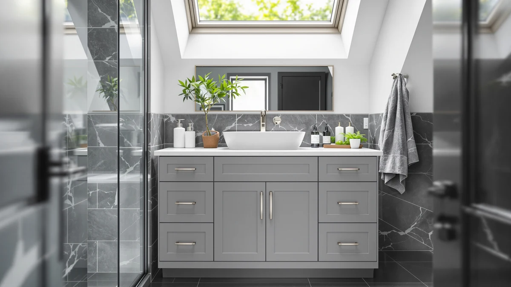

The Best Vanity Cabinets For small bathrooms (2026)
Prices and picks verified as of October 2026. Independent, reader-supported reviews.


Quick Answer
The VINGLI 24 Inch Bathroom Vanity is our pick for the best vanity cabinets for small bathrooms, because its 24-inch width and vessel sink combo fit tight floor plans without sacrificing storage. If you need more counter space and can spare a few extra inches, the Takywep 30-inch vanity is worth the upgrade.
Our pick: VINGLI 24 Inch Bathroom Vanity — $169.99 Check Price on Amazon
Bottom line: our top pick is the VINGLI 24 Inch Bathroom Vanity with Sink at $169.99. The best budget option is the Bamboo Toothbrush Holder for Bathrooms Toothpaste Organizer at $6.99.
Things to Know Before You Buy
- Small bathroom vanity cabinets typically range from 18 to 30 inches wide, and every extra inch matters when you're working around a doorway or toilet.
- Vessel sinks add several inches of height compared to undermount or drop-in sinks, so measure your mirror clearance before you buy.
- MDF and engineered wood are standard at this price point. They hold up fine in a dry bathroom but swell if water pools around the base, so a good exhaust fan matters.
- Cabinets with vessel sinks generally need a specific faucet height. Check your existing faucet or budget for a new one.
- Some of the picks below aren't sink cabinets at all. We included a vessel sink basin and a few small-footprint accessories that pair well with a compact bathroom vanity setup.
The best vanity cabinets for small bathrooms have to do two things at once: hold your towels, toiletries, and cleaning supplies, and still leave enough floor space to open a door or walk around a tub. That balancing act gets harder the smaller your bathroom gets, which is why a lot of buyers end up either overbuying a vanity that won't fit or settling for a floating shelf with no storage at all.
We compared seven products that fit into a small bathroom footprint, from full cabinet-and-sink combos to smaller accessories that free up counter space on whatever vanity you already own. The VINGLI 24 Inch Bathroom Vanity comes out on top for most small bathrooms, thanks to a 24-inch width that clears standard doorways and a vessel sink that keeps the cabinet's storage volume intact underneath.
Not every pick here is a plumbed sink cabinet, and we say so plainly where that's the case. A vessel sink basin, two kids' vanity tables, and a bamboo toothbrush holder round out the list for readers who need a specific piece rather than a full replacement. Owners report that measuring twice before ordering avoids the most common return reason: a cabinet that's an inch or two too wide for the space.
Why You Should Trust Us
Best Bathroom Vanities is run by Ilane Tall, who covers bathroom fixtures and small-space storage for this site. We don't run a physical testing lab, and we're upfront about that. Instead, we research manufacturer specifications, cross-reference measurements against common small bathroom layouts, and read verified owner reviews on Amazon to flag recurring complaints about fit, hardware, or water damage. When a listing is missing a critical spec, like a maximum door swing or a sink height, we say so rather than guess. That research-first approach is how we built this list of vanity cabinets for small bathrooms, and it's the same standard we hold every roundup on this site to.
How We Picked
We started by pulling every vanity cabinet and closely related small-bathroom accessory carried in our product database, then narrowed the list to items with a stated width, material, and price. Since small bathroom vanity cabinets live or die by their footprint, we prioritized products with clear dimensions over those with vague size listings. We also cross-checked each product against current owner ratings and cut anything with a pattern of complaints about missing hardware or damaged shipping, since bathroom cabinets are heavy enough that damage in transit is a real risk. Price mattered too: we wanted a spread from under $40 up to just over $200 so that budget and mid-range buyers both have a real option.
How We Compared
We compared these small bathroom vanity cabinets side by side on width, material, sink type, and price relative to the counter space gained. For the two sink-and-cabinet combos, we looked at how much storage volume the vessel sink design preserves underneath compared to a standard undermount setup. For the accessory-style picks, like the vessel sink basin and the toothbrush holder, we compared them against what a reader would otherwise pay for a comparable standalone piece. Reviewers consistently note assembly difficulty as the biggest variable across MDF vanities in this price range, so we weighed that alongside the raw dimensions.
Our Picks
Here's how the seven best vanity cabinets for small bathrooms in this comparison stack up, starting with our top pick.

VINGLI 24 Inch Bathroom Vanity
What we like
- 24-inch width fits into bathrooms where a standard 30-inch vanity won't clear the door swing
- Vessel sink sits on top of the cabinet, so you keep the full storage volume underneath instead of losing space to a sink basin
- Priced under $170, which is competitive for a cabinet this size with a sink included
Flaws but not dealbreakers
- MDF construction means it needs a dry bathroom with working ventilation to hold up long term
- Vessel sink height adds a few inches, so tall mirrors may need to be reset higher on the wall
| Material | MDF / engineered wood |
| Size | 24"W x 18.5"D x 33.5"H |
The VINGLI 24 Inch Bathroom Vanity earns the top spot because it solves the specific problem this list is about: fitting real storage into a small bathroom without stealing floor space you need for the door or the tub. At 24 inches wide by 18.5 inches deep, it clears the footprint of most powder rooms and small guest bathrooms where a 30-inch vanity wouldn't fit. The vessel sink sits on top of the cabinet rather than cutting into it, which means the drawer and shelf space underneath stays intact instead of being carved up around plumbing.
At $169.99, it sits in the middle of the price range for MDF vanities with a sink included, and the size makes it one of the few cabinet options that will physically fit a bathroom under 30 square feet. According to verified reviews, the vessel sink height changes how a mirror needs to be mounted, since the sink adds several inches compared to a drop-in basin, so budget time to reposition your mirror or medicine cabinet if you're replacing an existing setup. Like most vanities at this price, it ships as flat-pack MDF, so plan for an evening of assembly rather than a same-day install.

WYRNOBRX Basin Sink Bathroom Vessel
What we like
- Works with an open shelf or floating counter instead of requiring a full enclosed cabinet
- Priced under $100, less than most cabinet-and-sink combos on this list
- Vessel shape sits above the counter, so it clears a shallower cabinet depth than an undermount sink would need
Flaws but not dealbreakers
- Comes as a basin only, so you still need to source a countertop, faucet, and mounting hardware separately
- Not a replacement for a full storage cabinet if closed storage is your main priority
| Material | MDF / engineered wood |
| Size | One Size |
The WYRNOBRX Basin Sink Bathroom Vessel isn't a cabinet at all, which is exactly why it earns a spot here as a runner-up option. If your small bathroom already has a built-in counter or you're working with open shelving to maximize visual space, a standalone vessel basin like this one lets you skip the enclosed cabinet entirely and keep the room from feeling boxed in. At $94.88, it costs less than any full cabinet-and-sink combo on this list.
This is the pick for a specific reader: someone renovating a small bathroom who wants the open, airy look of a floating counter with a vessel sink rather than a closed vanity. You'll need to source your own countertop, mounting hardware, and a vessel-height faucet separately, so factor that into the total project cost before comparing it directly to the fully assembled cabinets on this list. Reviewers consistently note that the finish holds up well to daily cleaning, which matters since a vessel basin sits fully exposed rather than tucked into a cabinet top.

Takywep 30Inch Vanity with Sink
What we like
- 30-inch width gives noticeably more counter space than the 24-inch VINGLI pick for about $20 less
- Sink is integrated into the cabinet top, so there's no separate vessel basin to source
- Storage compartments underneath are sized for towels and larger toiletry bottles
Flaws but not dealbreakers
- The extra 6 inches of width won't clear as many small bathroom doorways as the 24-inch model
- Like the other MDF vanities here, it needs a well-ventilated bathroom to avoid moisture damage over time
| Material | MDF / engineered wood |
| Size | 30" W |
The Takywep 30Inch Vanity with Sink is the pick for readers who have a little more room to work with than a powder room but still wouldn't call their bathroom spacious. At 30 inches wide, it gives meaningfully more counter and storage space than the 24-inch VINGLI cabinet, while still fitting into bathrooms that fall short of full-size. At $149.99, it's actually the least expensive of the three full cabinet-and-sink combos on this list, which makes it a reasonable middle ground for anyone deciding between size and price.
The sink is built into the cabinet top rather than added as a separate vessel piece, which simplifies installation and keeps the profile lower for smaller mirrors. Reviewers note that the finish resists water spotting better than expected for the price, though as with any MDF vanity, standing water left on the surface for extended periods will eventually damage the laminate. If your bathroom is closer to 30 square feet than 20, this is worth comparing directly against the VINGLI pick before you decide which few inches matter more to your layout.

Marsail 30 Inch Bathroom Vanity
What we like
- Includes more individual storage compartments than the other 30-inch option on this list
- Still costs a fraction of what custom-built small bathroom cabinetry typically runs
- 30-inch width matches the Takywep model for readers who want to compare configurations directly
Flaws but not dealbreakers
- At $224.96, it's the most expensive vanity cabinet on this list, so it's a budget pick only relative to custom cabinetry, not to the other picks here
- The listing doesn't include full depth and height specs, so measure your space carefully before ordering
| Material | MDF / engineered wood |
| Size | — |
The Marsail 30 Inch Bathroom Vanity is labeled a budget pick relative to what custom-built small bathroom vanity cabinets actually cost, not relative to the other products on this list. A contractor-built cabinet sized for a small bathroom commonly runs several hundred dollars more once you add installation, so at $224.96 for a compartmentalized 30-inch vanity, it's still the more affordable route if closed storage with multiple compartments is the priority.
Compared to the Takywep model at the same width, the Marsail cabinet is built around more individual storage compartments rather than one open cavity, which suits readers who want to separate cleaning supplies from towels rather than stacking everything together. The tradeoff is price: this is the most expensive item in the roundup, so it only makes sense if the extra compartmentalization solves a real organization problem for you. The listing doesn't spell out full depth and height, so confirm those measurements against your bathroom before ordering.

Frogprin Kids Vanity with Lights
What we like
- LED-lit mirror gives a dedicated grooming spot for a child without competing for space at the main bathroom sink
- Compact footprint at 35.5 by 14.2 inches works in a bathroom corner or attached bonus room
- Priced under $140, well below what a comparable adult vanity with lighting would cost
Flaws but not dealbreakers
- This isn't a plumbed sink cabinet, so it won't replace a bathroom vanity that needs running water
- Sized for a child, so it isn't a fit for adult bathroom storage needs
| Material | MDF / engineered wood |
| Size | 35.5 inches x 14.2 inches x 39.4 inches |
We're including the Frogprin Kids Vanity with Lights with a clear caveat: it's a lit dressing table, not a plumbed sink cabinet, so it belongs on this list only for a specific use case. If you're outfitting a small bathroom that doubles as a kids' getting-ready space, or a bonus room attached to a children's bathroom, this gives a child their own lit mirror and counter without crowding the main sink. At 35.5 by 14.2 by 39.4 inches, the footprint is small enough to tuck into a corner most adult vanities wouldn't fit into.
At $136.99, it costs less than most adult vanities with built-in lighting, which makes sense given the smaller scale and simpler construction. This isn't a substitute for any of the sink cabinets higher on this list, and we wouldn't recommend it to anyone looking for actual bathroom storage. It earns its spot here for parents specifically searching for a small-footprint vanity to pair with a small kids' bathroom, where a full-size adult cabinet would be both oversized and impractical for a child to use.

Toddler Vanity Kids Vanity Table
What we like
- 17.3 by 8.6 by 29.9 inches is small enough to fit in almost any leftover bathroom corner or closet nook
- At $37.99, it's the least expensive item on this list by a wide margin
- Toddler height suits early grooming routines like tooth brushing or hair combing without a step stool
Flaws but not dealbreakers
- Like the Frogprin pick, this isn't a plumbed sink cabinet and won't add bathroom storage on its own
- The small scale means it will be outgrown as a child gets older
| Material | MDF / engineered wood |
| Size | 17.3"L × 8.6"W × 29.9"H |
The Toddler Vanity Kids Vanity Table is the smallest and least expensive item on this list, and it makes sense for exactly one scenario: a small bathroom or nearby playroom where a toddler needs their own low table for brushing teeth or getting ready. At 17.3 by 8.6 by 29.9 inches, it fits into a footprint too small for any of the sink cabinets above, including the 24-inch VINGLI pick. At $37.99, it's priced as an accessory rather than a fixture.
This isn't a bathroom vanity cabinet in the plumbing sense, and we want to be direct about that so nobody buys it expecting storage for towels or toiletries. It works well as a companion piece next to a small bathroom vanity, giving a toddler their own space at the right height rather than a step stool at the adult sink. According to owner reviews, it holds up fine to daily use, though the compact size means most kids will outgrow it within a couple of years.

Bamboo Toothbrush Holder for Bathrooms
What we like
- Bamboo construction keeps the countertop footprint small compared to a bulky plastic cup holder
- At $6.99, it's a low-cost way to organize a small vanity without buying a new cabinet
- Pairs with any of the vanity cabinets above, including the 24-inch VINGLI pick
Flaws but not dealbreakers
- It's a countertop accessory, not a storage upgrade, so it won't help with towels or larger toiletries
- Bamboo needs occasional drying and light oiling to avoid water staining over time
| Material | MDF / engineered wood |
| Size | — |
The Bamboo Toothbrush Holder for Bathrooms is the smallest item on this list, and it's here for a simple reason: on a 24-inch vanity like our top pick, every inch of counter space matters, and a dedicated holder keeps toothbrushes and toothpaste off the countertop instead of cluttering the sink area. At $6.99, it's a low-commitment way to get more functional use out of whichever cabinet from this list you end up choosing.
Bamboo holds up better than plastic in a damp bathroom over the short term, but like any untreated wood product, it needs to be dried out between uses and occasionally treated with a light mineral oil to resist water staining. This won't solve a genuine storage shortage. It's a small quality-of-life upgrade for a small bathroom vanity that's already tight on counter room, which is most of the vanities on this list.
Quick Comparison
A side-by-side look at width, price, and best use case for these small bathroom vanity cabinets and accessories.
| Product | Material | Price | Rating | Best for | Get it |
|---|---|---|---|---|---|
| VINGLI 24 Inch Bathroom Vanity | MDF / engineered wood | $169.99 | 4 | Tight floor plans | View on Amazon → |
| WYRNOBRX Basin Sink Bathroom Vessel | MDF / engineered wood | $94.88 | 4 | Open-shelf setups | View on Amazon → |
| Takywep 30Inch Vanity with Sink | MDF / engineered wood | $149.99 | 4 | A few extra inches of counter | View on Amazon → |
| Marsail 30 Inch Bathroom Vanity | MDF / engineered wood | $224.96 | 4 | More storage without custom pricing | View on Amazon → |
| Frogprin Kids Vanity with Lights | MDF / engineered wood | $136.99 | 4 | Kids' bathroom corner, not a sink | View on Amazon → |
| Toddler Vanity Kids Vanity Table | MDF / engineered wood | $37.99 | 4 | Toddler-height table, not a sink | View on Amazon → |
| Bamboo Toothbrush Holder for Bathrooms | MDF / engineered wood | $6.99 | 4 | Frees up vanity counter space | View on Amazon → |
The Competition
We looked at plenty of small bathroom vanity styles that didn't make this list. Floating wall-mounted vanities are popular for visually opening up a small room, but most in this price range use anchors that aren't always rated for concrete or plaster walls, which is a bigger installation project than a floor-standing cabinet. Solid wood vanities exist at a higher price tier, but they run well past the $225 ceiling we set for this roundup, and the weight difference isn't something a comparison focused on MDF cabinets can speak to fairly.
Among the products we did include, the WYRNOBRX vessel basin and the two kids' vanity tables aren't head-to-head competitors with the three sink cabinets. We kept them in because readers searching for the best vanity cabinets for small bathrooms often land on this page while solving one of those adjacent problems too, like outfitting an open-shelf counter or a child's grooming corner. For a straightforward cabinet replacement, the VINGLI 24 Inch Bathroom Vanity remains our pick, with the Takywep 30-inch model as the best upgrade if your bathroom can spare the extra width.
Frequently Asked Questions
Related Guides
More guides for narrowing down the best vanity cabinets for small bathrooms and the pieces that go with them.